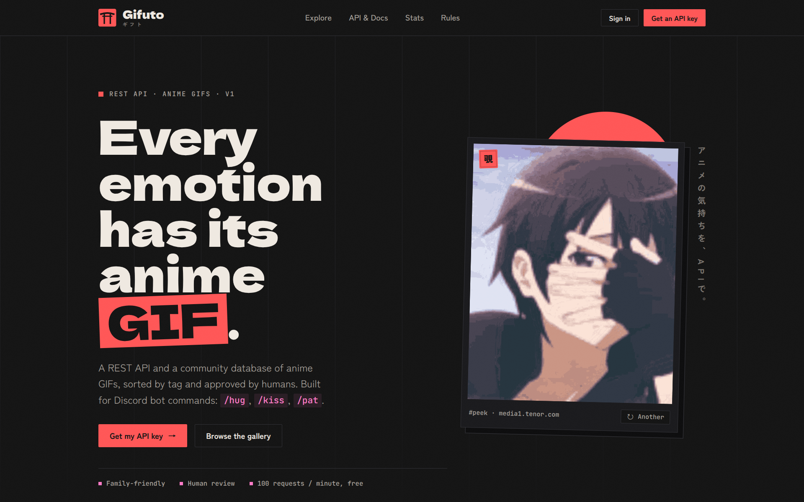

01
Gifuto
nouveau · en ligne
Gifuto est une API REST et un indexeur communautaire de GIFs d'anime. L'idée : offrir aux bots Discord et aux projets web une source de GIFs propre, rangée par catégorie et simple à interroger, pour des commandes d'interaction comme /hug, /kiss ou /pat.
Les GIFs sont proposés par la communauté, puis indexés et catégorisés. Le site est rendu côté serveur avec EJS, et un package npm, gifuto.js, permet de l'utiliser dans un projet.
300 téléchargements npm en une seule journée
En bref
- API REST pour récupérer des GIFs d'anime par catégorie
- Soumission communautaire, puis indexation et catégorisation
- Pensée pour les bots Discord et les projets web
- Package npm
gifuto.jspour l'intégrer facilement
Stack
- TypeScriptcode typé, côté serveur
- Express.jsserveur et routes de l'API
- Prismaaccès à la base de données
- EJSpages du site (templates)
- Neon PostgreSQLbase de données
$npm install gifuto.js